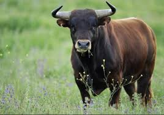
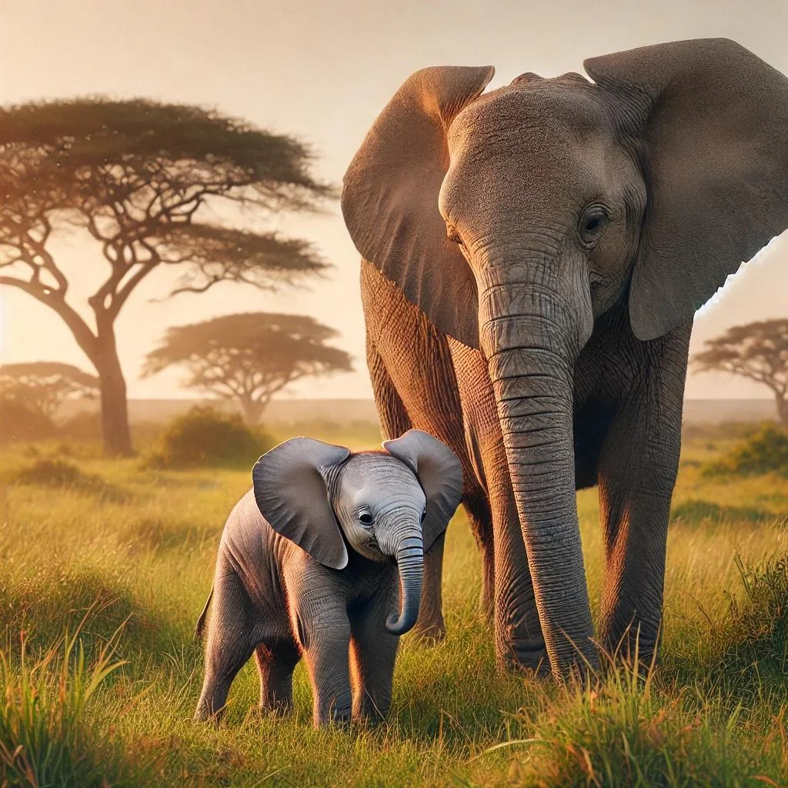
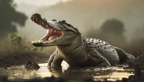

Animal

A sheep
Sheep (pl.: sheep) or domestic sheep (Ovis aries) are a
domesticated, ruminant mammal typically kept as livestock.
Although the term sheep can apply to other species in the genus
Ovis, in everyday usage it almost always refers to domesticated
sheep

Bull
A bull is an intact (i.e., not castrated) adult male of the
species Bos taurus (cattle). More muscular and aggressive than the
females of the same species (i.e. cows proper), bulls have long
been an important symbol in many religions, including for
sacrifices.

Elephants
Elephants are the largest living land animals. Three living
species are currently recognised: the African bush elephant
(Loxodonta africana), the African forest elephant (L. cyclotis),
and the Asian elephant (Elephas maximus).

Crocodile
Wait, if you thought Nature herself said that, you were quite
close. Only, this Nature is one of the leading scientific journals
in the world on life sciences and evolution. Evolution is a
prerequisite for living organisms, which ultimately makes